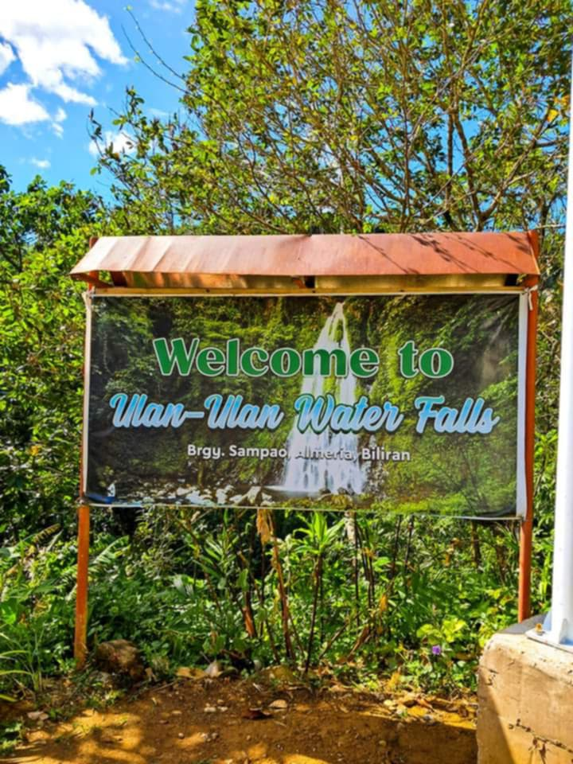
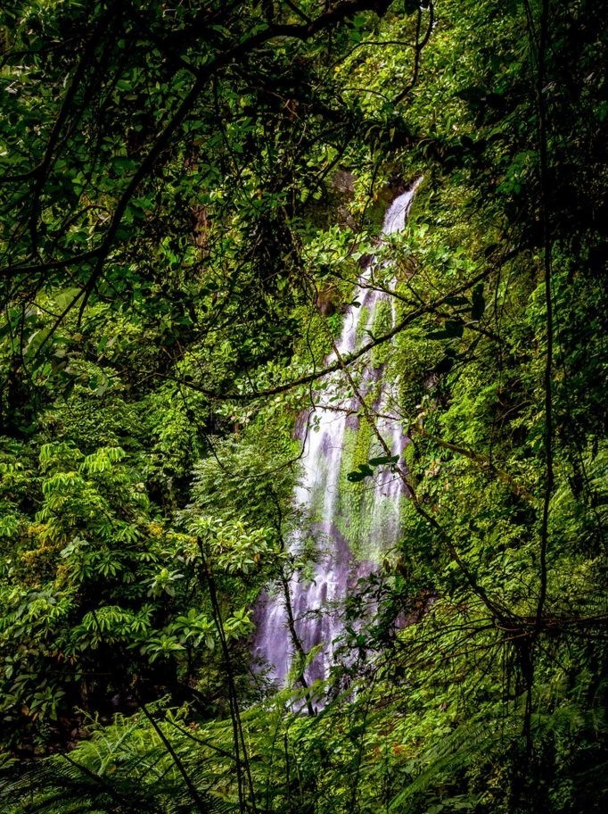
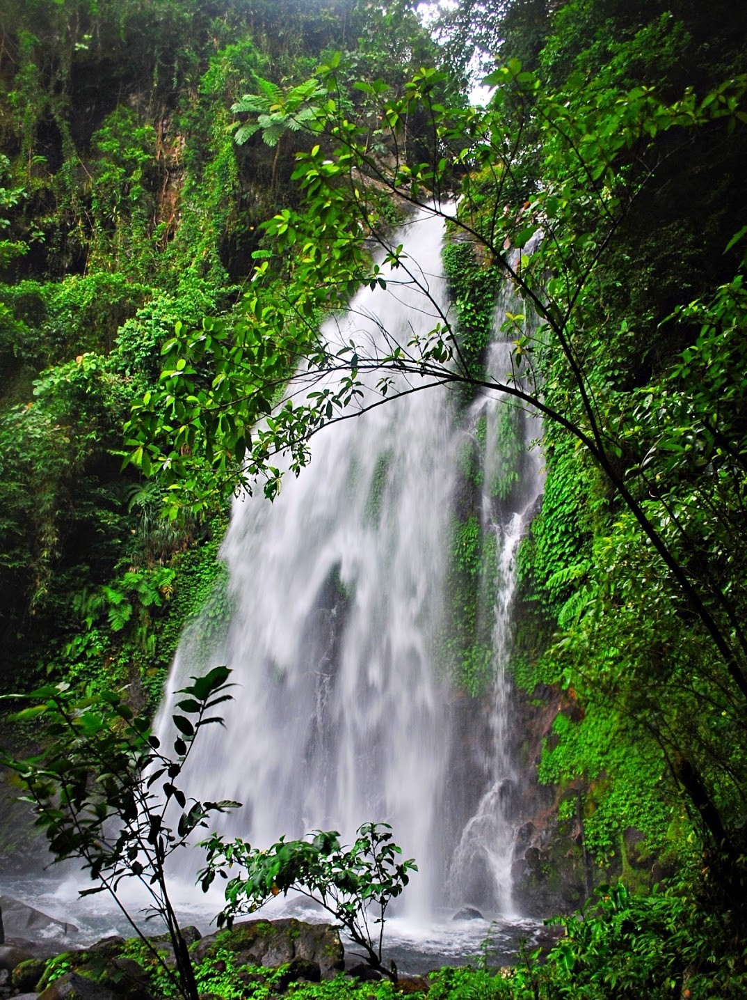
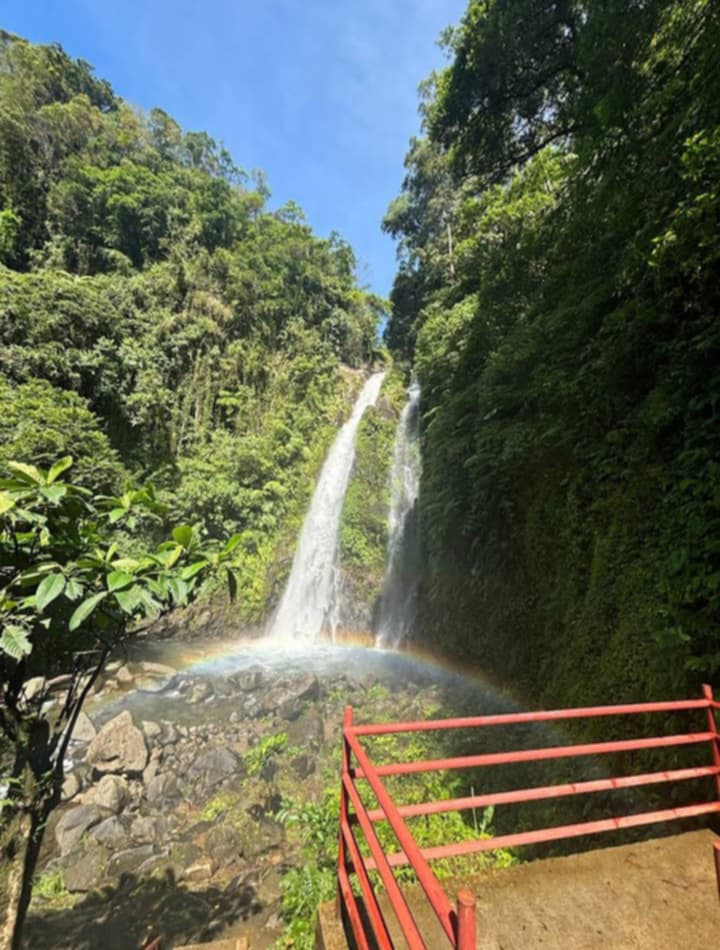

Information

Ulan Ulan Water Falls is located in the municipality of Almeria, Biliran. To reach the falls, you can take a habal-habal or your own vehicle from Naval town proper to Barangay Sampao for approximately 20-30 minutes ride.

The waterfall is situated in a remote area, surrounded by a thick tropical forest. The area is so densely populated by trees that the waterfall is almost hidden from sight until you get near the clearing that forms the basin, catching the water from above.

The Ulan-ulan Water Falls is an aptly named cascade. It has made a name for itself because of the fine mists that the water creates as it gushes down from 25 meters high.

Pack your own food and water, and respect the environment by leaving no trace. Enjoy the tranquility and beauty of this hidden gem in Biliran.
About
The Ulan-ulan Falls is an aptly named cascade. It has made a name for itself because of the fine mists that the water creates as it gushes down from 25 meters high, which, as you might expect, resembles rain.
Located in Almeria, a town in Biliran in the Eastern Visayas region, the Ulan-ulan Falls is one of the over 30 gorgeous waterfalls found all over this province (which is one of the smallest provinces in the Philippines.